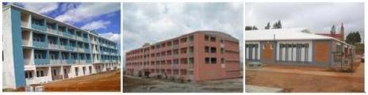

Construction des Bâtiments R+3 et Auditorium
Dans le cadre de la Réforme et du développement de l’Enseignement Supérieur et de la Recherche Scientifique,
afin d’améliorer les conditions de travail des étudiants,
Le Ministère de l’Enseignement Supérieur et de la Recherche Scientifique a programmé la construction
de Bâtiments R+3 destinés aux étudiants des Universités.
Le Bâtiment R+3 comporte :
(i) 76 Chambres d’Etudiant ayant une capacité totale de 304 étudiants,
(ii) 04 Salles d’Etude a raison d’une salle par niveau,
(iii) 04 Cuisines à usage commun,
(iv) 01 Salle de loisirs,
(v) 01 Salle d’accueil et, 01 Bureau pour le Responsable.
chaque Chambre Etudiant, il est prévu :
02 lits superposés,
matelas avec housse,
02 Armoires de rangement à deux compartiments de chaque,
04 Tables et 04 Chaises.
Backbone universitaire national de l’enseignement supérieur (ReNaSup)
Partenariat : Ministère de l’Enseignement Supérieur et de la Recherche Scientifique (MESupReS) / Groupe TELMA DTS
Universités ou institutions interconnectées
ANTANANARIVO MESupReS Fiadanana / Tsimbazaza
ANTANANARIVO Université Ankatso
TOAMASINA
FIANARANTSOA
TOLIARA
Universités ou institutions en cours d’interconnexion (décembre 2010)
MAHAJANGA
ANTSIRANANA
Universités ou institutions à interconnecter
IMAILAKA University (Ministère des Télécommunications, Postes et Nouvelles Technologies)
Source : MESupReS
Contacts :
Ministère : François RANDRIAHAVANIAINA (Directeur des Technologies de l’Information et de la Communication – dtic@mesupres.gov.mg)
Projet MADES : Xavier GIROD (Assistant Technique – xavier.girod@blueline.mg)
Réseaux informatiques intersites universitaires métropolitains (Technologie WIMAX)
Réseaux informatiques intersites universitaires métropolitains réalisés sur financement MADES (SCAC / Ambassade de France).
Partenariat : Ministère de l’Enseignement Supérieur et de la Recherche Scientifique (MESupReS) / Projet MADES
/ ANRE (Agence Nationale de Réalisation de l’e-Gouvernance)
ANTANANARIVO : 12 sites d’institutions universitaires ou
d’enseignement supérieur interconnectés en WIMAX
Ankatso : présidence, ESSA, fac Sciences, BU, Centre de ressources
en français/campus numérique francophone AUF
ENS (Ampefiloha)
INSCAE (67 Ha et Andohalo)
ESPA (Vontovorona)
IST Tana (Ampandiranomby)
MESUPRES (Fiadanana)
TOAMASINA : 6 sites interconnectés en WIMAX (débit entre 3Mb et 20Mb)
Présidence et administration centrale de l’université
Campus de Barikadimy (BU)
CICOR (NOC de l’université)
Office du Bac
CELVA
CEDI/GRENE
NOTA : connexion du CHU à l’étude
FIANARANTSOA : 2 sites interconnectés WIMAX point à point
Site ENI (NOC de l’université - ENI - CUFP)
Site d’Ambalapaison (ISTE - DEGS - Office du Bac - Campus Partenaire AUF)
Nota : La liaison ENI - Campus d’Andrainjato réalisé par TELMA dans le cadre
de la mise en place du backbone.
TOLIARA : 3 sites interconnectés en WIMAX
Site Présidence de l’université
Site IHSM
Site campus de Maninday
Source : MESupReS
Contacts :
Ministère : François RANDRIAHAVANIAINA (Directeur des Technologies de l’Information et de la Communication – dtic@mesupres.gov.mg)
Projet MADES : Xavier GIROD (Assistant Technique – xavier.girod@blueline.mg)
Réseaux LAN universitaire intra ville / intra campus (Technologie fibre optique)
Réseau LAN optique réalisé sur financement MENRS (MESupReS)
TOAMASINA : 6 sites interconnecté sur le campus de Barikadimy
Réseaux LAN optiques réalisés sur financement MADES (Partenariat MESupReS – Projet MADES)
TOAMASINA : 3 sites supplémentaires interconnectés sur le campus de Barikadimy + sécurisation électrique des 6 sites déjà existants
FIANARANTSOA :
ENI-CUFP : 3 sites interconnectés
Campus d’Andrainjato : 10 sites interconnectés
TOLIARA :
Centre ville , 2 sites interconnectés : Présidence - CEDRATOM
Campus de Maninday : 9 sites interconnectés (donc 4 en Ethernet outdoor enterré)
Source : MESupReS
Contacts :
Ministère : François RANDRIAHAVANIAINA (Directeur des Technologies de l’Information et de la Communication – dtic@mesupres.gov.mg)
Projet MADES : Xavier GIROD (Assistant Technique – xavier.girod@blueline.mg)
Projet Institut Universitaire de Technologie (IUT)
La vision du Ministère de l’Enseignement Supérieur et de la Recherche Scientifique pour la concrétisation de la Politique Générale de l’Etat repose sur quelques principes fondamentaux :
a. multiplier en les diversifiant les offres de formation ;
b. faciliter l’accès des bacheliers aux études supérieures ;
c. répondre aux besoins exprimés et identifiés des régions et de la nation.
d. …
L’opérationnalisation de ces principes nécessite que des mesures adéquates soient engagées, dont entre autres, en priorité :
(a) le recrutement de nouveaux enseignants-chercheurs (cette action permettra,
non seulement de rajeunir le corps professoral vieillissant dont plus de la moitié se situe dans la tranche d’âge de 50 à 59 ans) ; et
(b) dans le contexte de la décentralisation et dans une démarche de proximité,
la création d’Instituts Universitaires de Technologie au niveau des Régions,
notamment celles enclavées et riches en potentiels humains (bacheliers) et économiques (ressources).
Ces mesures semblent incontournables pour une réelle prise en compte des préoccupations des jeunes et de leurs parents, et pour promouvoir la professionnalisation des métiers.
En ce qui concerne l’Institut Universitaire de Technologie, Le Projet consiste :
- à réduire l’effet destructeur de l’enclavement pour le développement de la majorité des jeunes titulaires du diplôme de Baccalauréat ;
- à délocaliser les offres de formation vers les régions tout en assurant le rayonnement de l’Enseignement Supérieur malgache ;
- à promouvoir la mise en place d’une recherche dynamique locale en réponse aux besoins de l’économie.
Parmi les priorités figurent actuellement :
- l’Institut Universitaire de Maintirano,
- l’Institut Universitaire d’Alaotra Mangoro,
- …
Projet « Université Tana II »
Il est signalé que la moitié des bacheliers reçus chaque année proviennent de l’ex-Faritany d’Antananarivo.
Ainsi, compte tenu de cette situation particulière et de la volonté affichée du Gouvernement de donner un rayonnement régional à l’Enseignement Supérieur malgache,
ce projet consiste à créer une Université qui travaillera de concert avec les entreprises et industries dans le cadre des innovations et technologies de pointe.
Cette action est menée conjointement avec le Ministère de l’Aménagement du Territoire et de la Décentralisation.
L’Université Antananarivo II
C’est un campus où seront construits des bâtiments modernes avec beaucoup d’espace et de verdure autour pour dégager la prise en compte de l’aspect environnemental.
On y trouvera tout ce qui pourrait contribuer au développement de l’homme.
C’est aussi des formations dispensées par des experts,
des activités de recherche centrées sur les besoins de l’économie et menées sur le campus par des étudiants encadrés par une équipe reconnue tant au niveau national, régional, qu’international.
L’objectif principal étant de répondre aux attentes de la nation ou de la région de l’Océan Indien en matière de production, développement, etc.
Projet de construction d’un Auditorium et de Bâtiments R+3
Dans le cadre de la Réforme et du développement de l’Enseignement Supérieur et de la Recherche Scientifique, afin d’améliorer les conditions de travail des étudiants,
Le Ministère de l’Enseignement Supérieur et de la Recherche Scientifique a programmé la construction de Bâtiments R+3 destinés aux étudiants des Universités.
Il est rappelé les différentes étapes à réaliser pour chaque site :
a. Acquisition des structures métalliques et leur acheminement sur site,
b. Réalisation des travaux préparatoires,
c. Acquisition des matériaux (ciment, …),
d. Réalisation des travaux de construction (assemblage, remplissage, couverture, …),
e. Acquisition d’Equipement et Mobilier, et
f. Viabilisation (branchement Eau & Electricité, …) et aménagement extérieur.
Compte tenu de l’enveloppe budgétaire très limitée et conformément à l’instruction retenue,
par rapport à la Politique Générale de l’Etat pour 2010 et à la volonté de Monsieur le Président de la Haute Autorité de la Transition,
il s’agit d’assurer, dans l’immédiat, le démarrage des travaux pour les nouveaux sites ainsi que la continuation de ceux déjà en cours.
Le Bâtiment R+3 comporte :
(i) 76 Chambres d’Etudiant ayant une capacité totale de 304 étudiants,
(ii) 04 Salles d’Etude a raison d’une salle par niveau,
(iii) 04 Cuisines a usage commun,
(iv) 01 Salle de loisirs,
(v) 01 Salle d’accueil et, 01 Bureau pour le Responsable.
Dans chaque Chambre Étudiant, il est prévu :
- 02 lits superposés,
- 04 matelas avec house,
- 02 Armoires de rangement à deux compartiments de chaque,
- 04 Tables et 04 Chaises.
Réseaux informatiques intersites universitaires métropolitains (Technologie WIMAX)
Réseaux intersites universitaires métropolitains dont la
réalisation est prévue en 2011 sur financement MADES (sous réserve de
l’application du LMD dans les universités concernées)
MAHAJANGA : 3 sites à interconnecter en WIMAX :
Site CIEL-Présidence-Médecine-IOSTM
Campus d’Ambodrona
CHU
ANTSIRANANA : 3 sites à interconnecter en WIMAX :
Campus universitaire
Site présidence de l’Université (centre ville)
IST
Source : MESupReS, nov 2010
Réseaux LAN universitaire intra ville / intra campus (Technologie fibre optique)
Réseaux LAN optiques dont la réalisation is prévue en 2011 sur
financement MADES -SCAC/Ambassade de France- (sous réserve de l’application du LMD dans les universités concernées)
MAHAJANGA :
Centre ville , 3 sites à interconnecter :
Présidence KAKAL
Faculté de Médecine
IOSTM/CIEL
Campus d’Ambodrona : 9 sites à interconnecter
ANTSIRANANA :
Campus universitaire : CdC à l’étude
Réseaux LAN optiques à réaliser et financer (CdC à réaliser)
Site Campus Ankatso
Site de l’ESPA à Vontovorona
Source : MESupReS